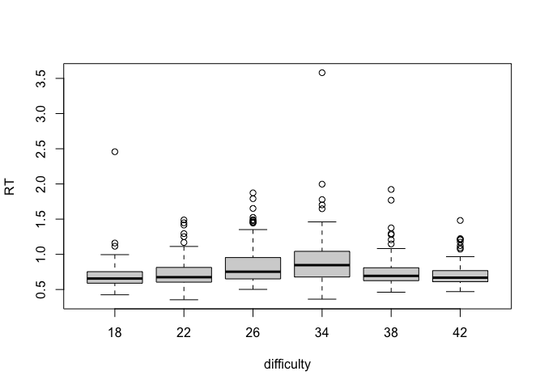

The goal of RepPack27 is to be able to apply a simple between-subjects ANOVA (two-way) simply by using the ANOVA2_BW() function. The following will show an example using the ‘RTDATA’ built in dataset.
You can install the development version of RepPack27 like so:
# This is how you can install the package:
remotes::install_github("brittn27/RepPack27")This is a basic example which shows you how to solve a common problem:
data(RTDATA)
summary(RTDATA)
#> Picture difficulty depth side elevation participant
#> Length:672 18:112 far :336 left :336 down:336 01:672
#> Class :character 22:112 near:336 right:336 up :336
#> Mode :character 26:112
#> 34:112
#> 38:112
#> 42:112
#> RT Correct
#> Min. :0.3541 0: 13
#> 1st Qu.:0.6167 1:659
#> Median :0.7040
#> Mean :0.7758
#> 3rd Qu.:0.8467
#> Max. :3.5806
Data <- RTDATA
library(RepPack27)
## basic example code of summary --
?ANOVA2_BW()
x <- RTDATA$difficulty
y <- RTDATA$depth
z <- RTDATA$RT
#Data <- RTDATA
summary(Data)
#> Picture difficulty depth side elevation participant
#> Length:672 18:112 far :336 left :336 down:336 01:672
#> Class :character 22:112 near:336 right:336 up :336
#> Mode :character 26:112
#> 34:112
#> 38:112
#> 42:112
#> RT Correct
#> Min. :0.3541 0: 13
#> 1st Qu.:0.6167 1:659
#> Median :0.7040
#> Mean :0.7758
#> 3rd Qu.:0.8467
#> Max. :3.5806
# and then an ANOVA
ANOVA2_BW(x,y,z)
#> Df Sum Sq Mean Sq F value Pr(>F)
#> x 5 4.18 0.8370 12.547 1.18e-11 ***
#> y 1 0.14 0.1383 2.073 0.150
#> x:y 5 0.27 0.0546 0.818 0.537
#> Residuals 660 44.03 0.0667
#> ---
#> Signif. codes: 0 '***' 0.001 '**' 0.01 '*' 0.05 '.' 0.1 ' ' 1You’ll still need to render README.Rmd regularly, to keep README.md up-to-date. devtools::build_readme() is handy for this.
You can also embed plots, for example:

In that case, don’t forget to commit and push the resulting figure files, so they display on GitHub and CRAN.